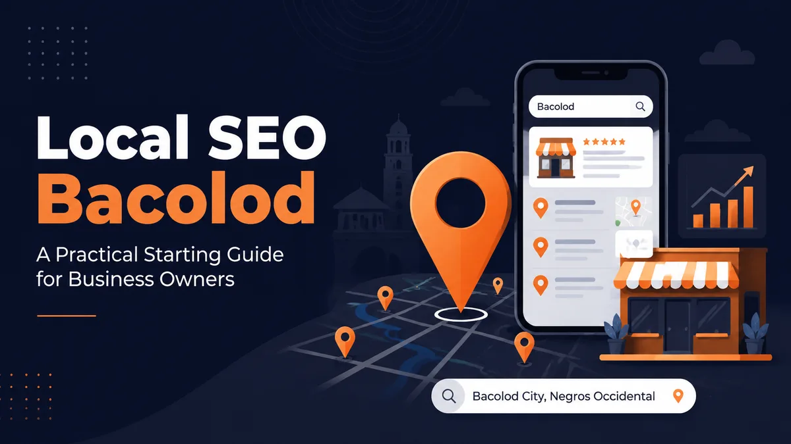

Nearly half of all searches on Google carry local intent. For Bacolod business owners, that makes local SEO one of the most important investments you can make right now.
Most businesses here still rely on referrals and word-of-mouth. Those work, but they have limits. In 2026, your next customer is just as likely to search "web designer in Bacolod" or "salon near me" on their phone as to ask a friend. If you're not showing up in those results, you're handing leads to competitors who are.
This is a practical guide, not a theory post. I recently went through the full process of setting up the Google Business Profile for JG DigitalHub, my web design and local SEO business here in Bacolod City. I'm sharing exactly what I did and what every local business owner in Bacolod needs to know to get found online.
What Is Local SEO and Why Does It Matter for Bacolod Businesses?
Local SEO is the process of optimizing your online presence so your business shows up when people nearby search for your products or services on Google and Google Maps. It covers your Google Business Profile, your website, online reviews, and how consistently your business details appear across the web. For Bacolod businesses, it's the most direct way to attract customers who are ready to spend.
Unlike broad national SEO, local SEO is hyper-targeted. It puts your business in front of people in your area, searching for exactly what you offer, right now. That audience converts at a far higher rate than someone who stumbles across a generic ad.
The search space in Bacolod is also far less crowded than Metro Manila. That means a well-executed local SEO strategy can deliver results faster here than it would in a more saturated market.
How Many People Are Actually Searching for Local Businesses?
Close to half of all Google searches, about 46%, carry local intent, meaning someone is looking for a product, service, or place near them. On top of that, "near me" mobile searches have grown by roughly 900% in just two years. Bacolod customers are actively searching for what you offer on Google every day. The only question is whether they're finding you or your competitor.
That 46% figure represents billions of searches every month. And the explosion in "near me" searches shows that local search behavior is now dominated by mobile users looking for immediate solutions.
If your business isn't optimized for those searches, you're invisible to a massive and growing audience.
Setting Up Your Google Business Profile the Right Way
Your Google Business Profile (GBP) is the foundation of local SEO in Bacolod. A fully completed GBP earns roughly 7 times more clicks than one left incomplete. Profiles that publish regular updates are more than 3 times as likely to appear in the top 3 map results. Complete every section, upload photos, and post regularly to maximize your local visibility on Google.
I went through this process recently for JG DigitalHub. Here's exactly what I did:
I selected "Internet Marketing Service" as my primary category, matching what I actually offer. I set my service area to cover Bacolod City and Negros Occidental. Then I added 9 custom services with descriptions so Google could match me to relevant searches. Since JG DigitalHub operates fully online, I set my hours to 24/7. I also wrote a keyword-rich business description, uploaded my logo and a portfolio photo, and I'm currently completing video verification.
Every step signals to Google that your profile is active, accurate, and worth showing to searchers.
Your GBP setup checklist:
- Choose the primary category that best matches your main service
- Set your service area or add your physical address
- Add all your services with clear, keyword-friendly descriptions
- Write a business description that includes your target location and service keywords
- Upload quality photos (logo, portfolio, team)
- Publish regular posts and updates to stay active
Need help getting this done right? Check out my local SEO and Google Business Profile management services for businesses across Bacolod and Negros Occidental.

Why Reviews Matter More Than Ever in 2026
Reviews are one of the strongest trust signals in local SEO today. Research shows that 87% of consumers read reviews before choosing a local business. Businesses with fewer than 10 reviews or an average rating below 4.0 stars consistently see lower conversion rates compared to competitors with a stronger review profile.
This matters both for your Google ranking and for whether a searcher picks you after seeing your listing. A business with 40 five-star reviews looks far more credible than one with 2 reviews and a 3.4-star average.
The most effective way to build reviews is simple: ask. After completing a job, send your client a short message with a direct link to your Google review page. Most satisfied customers are happy to help when you make it easy for them.
Respond to every review too. A warm reply to a positive review shows appreciation. A calm, professional response to a negative one shows integrity, and potential customers notice both.
How Do You Get Your Business to Show Up in the Google Maps 3-Pack?
The Google Maps 3-Pack is the block of 3 local business listings that appears at the top of Google search results for local queries. It shows up in 93% of searches with local intent, and those top 3 spots capture around 42% of all clicks. Google selects them based on three factors: relevance (how well your listing matches the query), distance (how close you are to the searcher), and prominence (how trusted and well-known your business is online).
You control relevance by choosing the right categories, using location keywords in your profile, and adding detailed service descriptions. Distance is determined by your service area or physical location. Prominence builds over time through reviews, citations, and website authority.
On-Page SEO Basics Every Local Business Website Needs
Your GBP handles your map presence, but your website is what builds long-term authority. Google uses your site to verify your business, understand your services, and measure your credibility. Without solid on-page SEO, even a great GBP will underperform.
Start with these essentials:
- Location keywords in your content. Include your city name in page titles, headings, and body copy. "WordPress Web Designer in Bacolod" is far stronger than just "WordPress Web Designer."
- Optimized title tags and meta descriptions. These are the lines that appear in search results. Each page needs a unique, keyword-rich title and a compelling description that earns the click.
- Consistent NAP information. NAP stands for name, address, and phone number. These must be identical across your website, GBP, and every directory listing. Inconsistencies reduce Google's trust in your business.
- LocalBusiness schema markup. This is structured code that tells Google your business details in a format it reads directly, without guessing from your copy.
For a full breakdown of what to check, use this on-page SEO checklist for local businesses. Also remember that site speed also affects local rankings, so a slow website will drag down your visibility no matter how well the rest is optimized.
Is Local SEO Worth It for Small Businesses in Bacolod?
Yes. Local SEO delivers leads at a cost roughly 61% lower than traditional outbound marketing. For small businesses in Bacolod that can't afford expensive ad campaigns, that efficiency is hard to beat. Unlike paid ads that stop the moment you stop spending, local SEO builds compounding visibility that keeps working for you around the clock.
And because Bacolod's local search space is still far less competitive than Metro Manila, you can reach the top of results faster and hold that position longer. Every peso you put into local SEO builds something permanent: a stronger profile, more reviews, a better website, and more citations that compound into a dominant local presence over time.
Start Getting Found on Google Today
Local SEO in Bacolod comes down to three things done consistently: a fully optimized Google Business Profile, a steady stream of genuine customer reviews, and a website that communicates clearly with Google.
Get those three working together and you'll start showing up where it counts: in the Maps 3-Pack, in organic local results, and increasingly, in AI-generated answers.
The businesses building this foundation now will be the hardest to displace later.
If you're not sure where your online presence stands, the best first step is finding out. I offer SEO audit packages designed specifically for local businesses in Bacolod and Negros Occidental, and I personally review every audit I send.
Frequently Asked Questions
How long does local SEO take to show results in Bacolod?
Most local SEO efforts take 3 to 6 months to produce meaningful results. Research shows that top-ranking local pages are on average 2.6 years old, meaning consistent, long-term effort is what separates the top spots from the rest. That said, a fully completed Google Business Profile can start generating calls and map views within a few weeks of going live.
Do I need a website to rank on Google Maps?
No. You can appear on Google Maps with just a Google Business Profile and no website at all. However, having an optimized website significantly boosts your chances of ranking higher. Google treats your website as a trust and authority signal, and it gives map visitors a place to learn more and convert into paying customers.
What's the difference between SEO and local SEO?
Traditional SEO focuses on ranking for general, non-location-specific queries, like "how to speed up a WordPress site." Local SEO targets searches where someone wants a business nearby, like "electrician in Bacolod." Local SEO uses tools and tactics that standard SEO doesn't prioritize: Google Business Profile, local citations, NAP consistency, and location-based keyword targeting.
How much does local SEO cost in the Philippines?
Local SEO pricing varies by provider and scope. Freelance specialists typically cost less than agencies and offer more personalized attention. At JG DigitalHub, my SEO audit packages are priced to be accessible for small and medium businesses in Bacolod. I recommend starting with a free audit so you know exactly what work is needed before committing to a monthly plan.
Can I do local SEO myself, or do I need to hire someone?
You can handle the basics yourself, especially GBP setup and review collection. But the technical side, including schema markup, citation building, and competitive keyword research, is harder to get right without experience. If you want faster results or don't have time to manage it all, working with a local SEO specialist is usually the smarter investment. Request a free local SEO audit to see exactly where you stand before deciding.